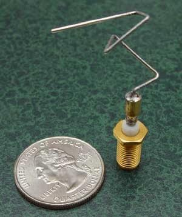
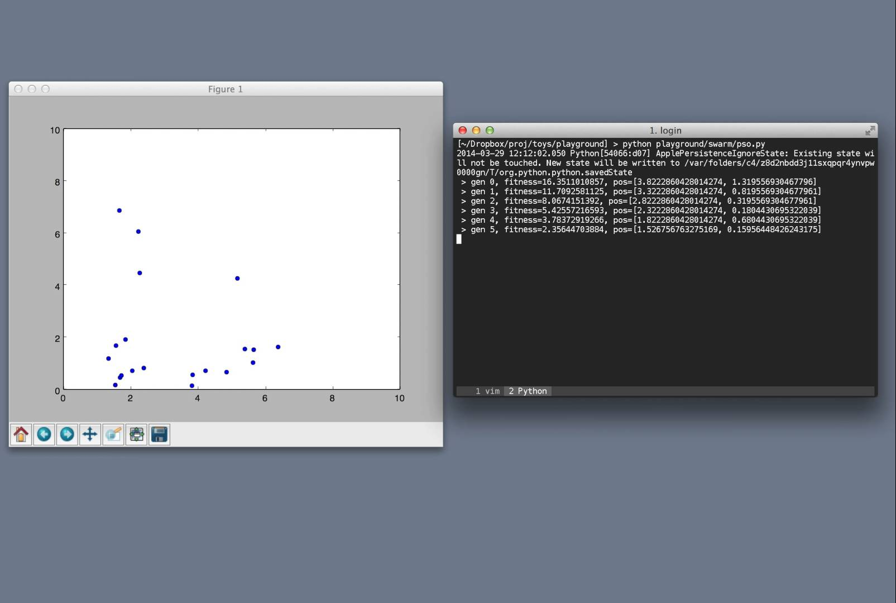

- Genetic Algorithm
- 
- Genetic Programming
-

- Particle Swarm Optimization
- 
playground is a meta-heuristic library implemented in Python designed to be flexible and reusable. At current the following algorithms have been implemented:
Currently the best way is to clone the repo and install the dependencies:
git clone git@github.com:chutsu/playground.git pip install -r requirements.txt # installs dependencies for playground
My name is Chris Choi, I am a PhD Student at the University of St Andrews. I created this library as a programming excercise and also as part of my PhD research to find ways to optimize meta-heuristics. For more information about me visit my website here!